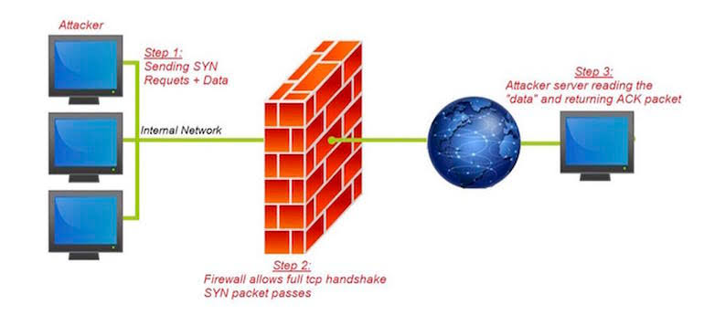

A Firewall is a system that prevents unauthorized access to a private network.
Firewalls are extensively used by businesses, corporations and the government to protect against potential hackers.
They act as a barrier between a private network and the Internet.
Anything that goes into or out of the network must pass through the firewall.
